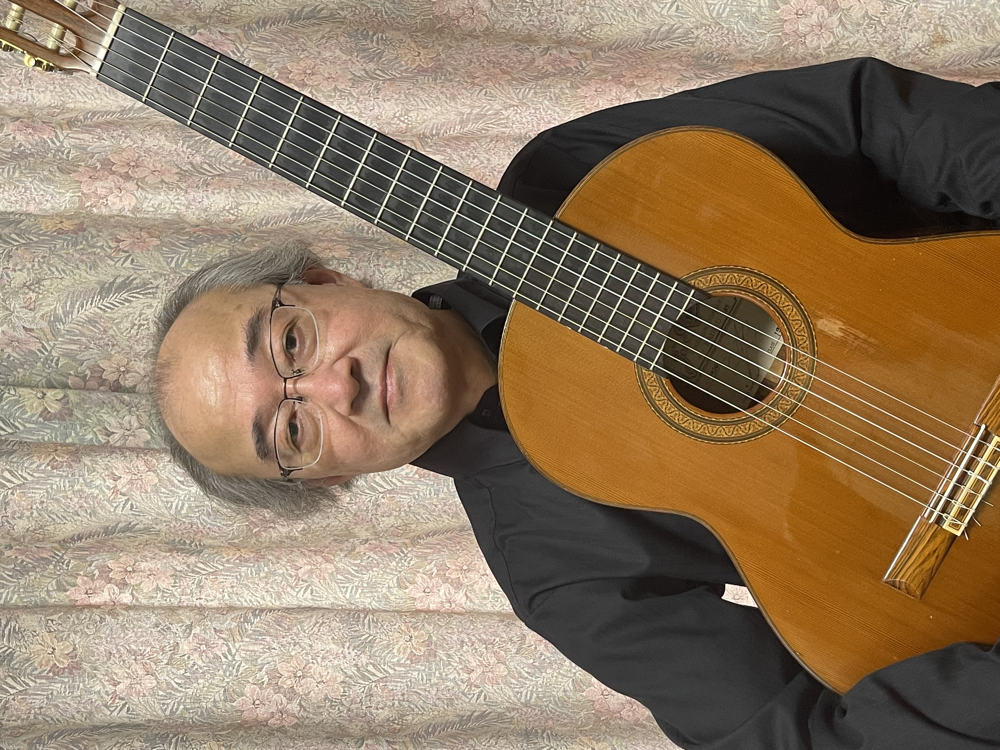
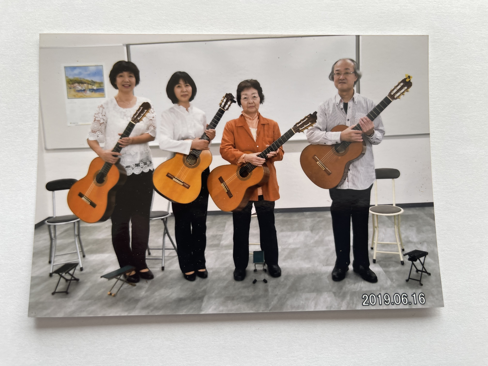

― 初心者の方、これからクラシックギターを始めたい方 ―
― 緑ヶ丘にある静かな場所で一緒に音楽を楽しみませんか ―
― お子様向けのキッズコースもご準備しております ―
代表紹介
石黒 康彦
( ISHIGURO YASUHIKO )

1954年 仙台市 出身。
ギタリストで宮城県芸術協会会員の若生 智彦氏に師事。
スペインのギタリスト、ホセ・ルイス・ゴンザレスにレッスンを受ける。
第6回 東北ギターコンクール 首席。
第1回 スペインギターコンクール 第3位 受賞。
その後、リサイタル、コンサート等、多数出演。
現在、グリーンヒルギターアンサンブル、及びクラシックギタースクールの代表も務める。
グリーンヒルギター
アンサンブル
2010年 石黒 康彦、石黒 みさ子の2名でデュエットを結成。
その後、アンサンブルの同志が加入し、ホームコンサート、介護施設、各種イベント、ライブ等で活動しています。
レパートリーは、クラシック、ポピュラー、映画音楽、ラテン、歌謡曲等、音楽のジャンルにとらわれず様々な曲の演奏をしています。
メンバーも随時募集していますので、団体演奏に興味がある方は、是非お気軽にご連絡ください。
お問い合わせはホームページ下部のアクセスからお電話ください。
皆様からのご連絡お待ちしています。
※アンサンブル参加費は練習参加の都度、100円頂戴しております。

レッスン
| コース | 料金 | レッスン時間 |
|---|---|---|
| 3～4回/月 | 5,000円/月 | 30分 |
| 2回/月 | 3,000円/月 | 30分 |
| ワンレッスン | 2,000円 | 60分（休憩含む） |